Session 06: Data Visualization for Insurance
Learning Objectives
- Define and calculate the key insurance KPIs that drive visualization decisions — loss ratio, claim frequency, average claim size, claim settlement ratio, and persistency
- Create line charts, bar charts, histograms, box plots, scatter plots, and heatmaps using Matplotlib and Seaborn
- Analyze claims trends over time with moving averages and year-over-year comparisons
- Visualize portfolio composition and cross-sectional comparisons across policy types, channels, and customer segments
- Export publication-quality charts at 300 DPI for boardroom presentations and reports
- Translate every chart into a management decision — what does it tell you, so what, and what should you do about it
The Manager's Question First
This session teaches you to build charts — but for a management student, that is not the point. The point is what you do with them. Imagine you are the Head of Analytics, presenting to the Board. Every chart you show must let the Board answer three questions in 30 seconds:
Every section in this session follows this pattern. The Python code is the tool — the What / So What / Now What is the craft. A chart that fails the 30-second test is decoration, not analysis.
1. Insurance KPIs for Visualization
Before we create a single chart, we must understand what we are visualizing. Insurance has a specific vocabulary of Key Performance Indicators (KPIs) — and every chart should make at least one of these numbers clearer, more actionable, or more memorable. A chart that does not help a business audience make a decision is decoration, not data visualization.
1.1 The Six KPIs That Drive Insurance Visualization
| KPI | Formula | What It Reveals | Best Chart Type |
|---|---|---|---|
| Loss Ratio | Incurred Claims ÷ Earned Premium | Pricing adequacy — is the insurer collecting enough premium for the risk it covers? < 60% may indicate over-pricing; > 85% signals pricing pressure. | Line chart (trend), bar chart (by product), gauge (current value vs. target) |
| Claim Frequency | Number of Claims ÷ Number of Policies | How often do claims happen? Useful for spotting emerging risk patterns — a rising frequency trend may indicate a new risk factor, product change, or claims process shift. | Line chart (trend), bar chart (by segment, region) |
| Average Claim Size | Total Claim Amount ÷ Number of Claims | How severe are claims when they occur? Rising average claim size indicates claims inflation — medical cost inflation, repair cost inflation, or more severe losses. | Line chart (trend), box plot (distribution by product), histogram (distribution shape) |
| Claim Settlement Ratio | Claims Paid ÷ (Claims Paid + Claims Rejected) | How many claims are actually paid? A measure of fairness and customer treatment. Too low (< 80%) is bad for customers. Too high (> 98%) may indicate inadequate fraud control. | Bar chart (by product), stacked bar (paid vs. rejected), gauge (current vs. regulatory target) |
| Persistency / Renewal Rate | Policies Renewed ÷ Policies Due for Renewal | Customer retention. The most important leading indicator of future profitability. A 1% improvement in persistency can increase enterprise value by 5–10% in life insurance. | Line chart (cohort analysis), bar chart (by channel, product) |
| Premium Growth YoY | (Current Year Premium − Prior Year Premium) ÷ Prior Year Premium | Business growth rate. Must be analyzed alongside loss ratio — rapid growth with deteriorating loss ratio indicates under-pricing for market share. | Bar or waterfall chart, line chart (cumulative), dual-axis (growth + loss ratio) |
💼 Exercise 1.1 — Which KPI Does Each Stakeholder Watch?
Every KPI exists because someone with a decision to make needs it. For each stakeholder below, choose the KPI they watch most closely, and the decision it drives.
| Stakeholder | Primary KPI | Decision It Drives |
|---|---|---|
| CEO / Board | ||
| CFO | ||
| Head of Underwriting | ||
| Head of Claims | ||
| Head of Marketing |
Check Your Mappings
| Stakeholder | KPI | Decision It Drives |
|---|---|---|
| CEO / Board | Combined Ratio | Is the core business profitable? Where to focus capital and strategy. (It captures both claims AND expenses in one number.) |
| CFO | Combined Ratio (+ solvency) | Is underwriting profit enough, or must investment income cover losses? Reserve adequacy. |
| Head of Underwriting | Loss Ratio by product | Which product is priced inadequately? Where to tighten risk selection / raise rates. |
| Head of Claims | Claim Settlement Ratio (+ days-to-settle) | Are we treating customers fairly and fast enough? Where are process bottlenecks? |
| Head of Marketing | Persistency | Are customers renewing? Where to invest in retention vs. acquisition. |
Key idea: The same chart can serve different stakeholders differently. A loss-ratio-by-product chart tells the Underwriting Head what to re-price and the CFO what the profit risk is. Always ask: who is looking at this, and what decision are they making?
2. Matplotlib Foundations
Matplotlib is the foundational plotting library in Python. Seaborn, which we cover in Section 3, is built on top of Matplotlib and provides higher-level statistical visualizations. Understanding Matplotlib basics is essential because all Seaborn plots can be customized using Matplotlib commands.
2.1 Setup and Imports
2.2 The Anatomy of a Matplotlib Figure
Every Matplotlib chart has a Figure (the container) and one or more Axes (the actual plots within the figure). Understanding this distinction is key to controlling your charts precisely.
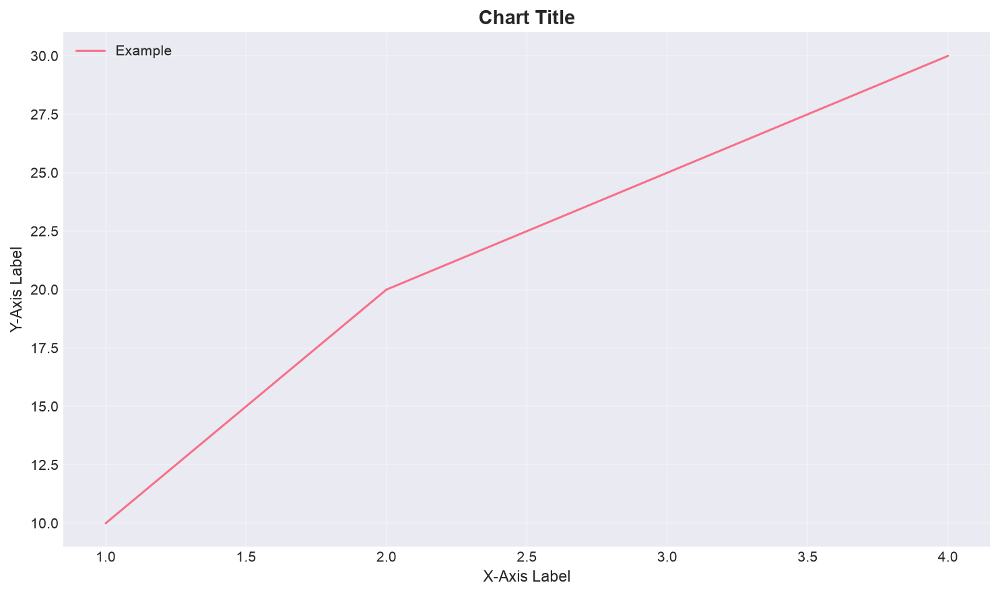
2.3 Essential Matplotlib Customizations
These formatting commands apply to any plot type and are the ones you will use most often in insurance dashboards:
👀 Exercise 2.1 — Spot the Deceptive Chart
Both charts below show the same loss-ratio data. One is honest; one is misleading. Identify which is which, what manipulation is used, and why a board could be misled.
Loss ratio: Jan 7.0%, Feb 7.2%, Mar 7.4%, Apr 7.6%
Loss ratio: Jan 7.0%, Feb 7.2%, Mar 7.4%, Apr 7.6%
Questions:
- Which chart is misleading, and what is the manipulation?
- Why would a Board be misled by it?
- As a manager, what do you check before trusting a chart's "story"?
Check Your Analysis
- Chart B is misleading. It truncates the Y-axis (starts at 7.0% instead of 0). A change from 7.0% to 7.6% is genuinely small (0.6 percentage points) — but by cropping the axis, Chart B makes the bars look like a dramatic surge. Chart A uses the honest full scale and correctly shows the ratio as essentially flat.
- A board could be misled into panic (thinking claims are spiralling, demanding drastic action) or — if the chart was used in reverse — into complacency. The 0.6 pp change is real but immaterial; a truncated axis turns it into a "crisis."
- Manager's check: (1) Does the Y-axis start at zero? (2) What is the actual numeric change, not just the visual? (3) What time window is chosen — does it cherry-pick a favourable range? (4) Is there a comparison baseline? (5) Who made the chart and what are they trying to convince you of?
This is the most important chart skill in management: the ability to read a chart critically before trusting its conclusion. A chart is an argument — evaluate it like one.
3. Seaborn for Statistical Visualization
Seaborn extends Matplotlib with three capabilities that are particularly useful for insurance analysis: (a) it works directly with Pandas DataFrames without requiring manual data aggregation, (b) it creates statistical plots that automatically compute distributions and relationships, and (c) it has built-in support for faceting (creating multiple related plots by category).
3.1 Key Seaborn Plot Types
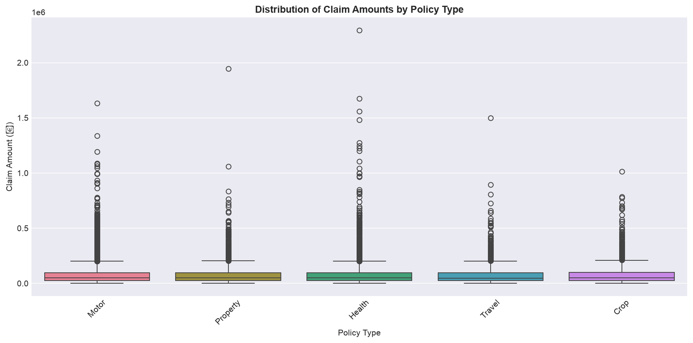
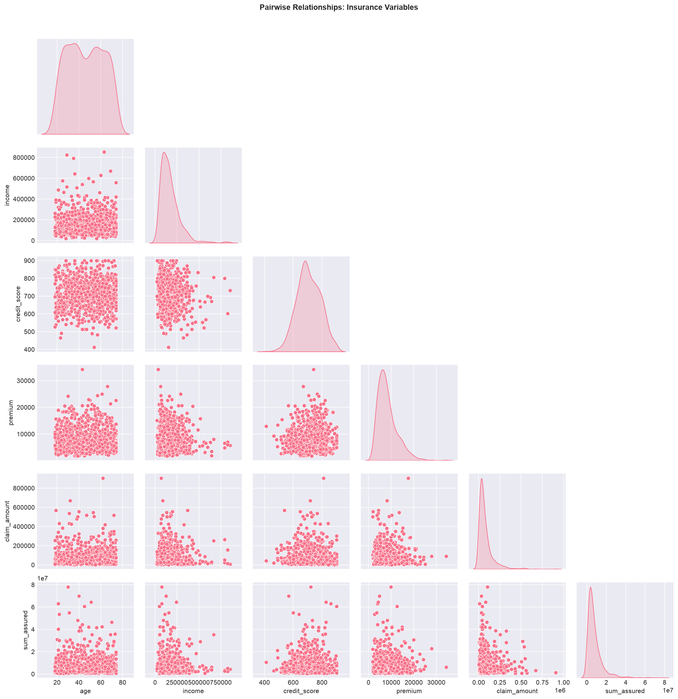
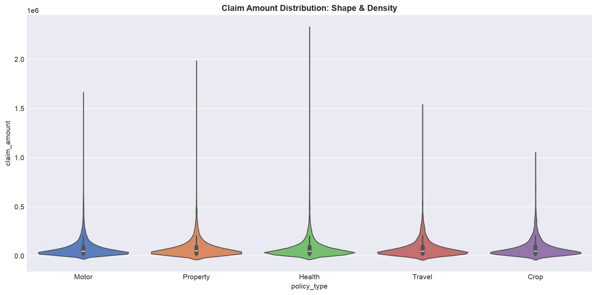
3.2 FacetGrid — Multi-Category Comparison
FacetGrid creates a grid of subplots, one for each value of a categorical variable. This is invaluable for comparing distributions across segments:
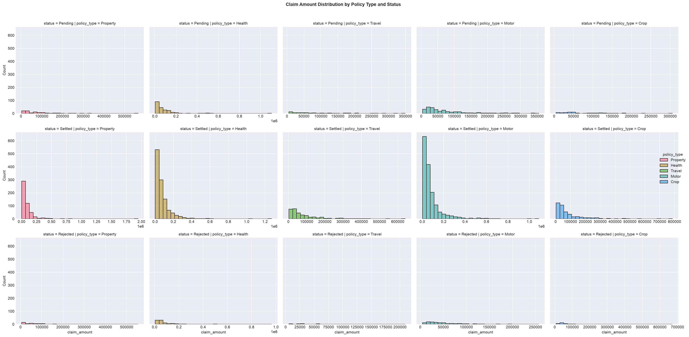
📊 Exercise 3.1 — What Does This Plot Tell a Manager?
You are shown two Seaborn plots. For each, write the business insight — not the statistical detail. Then say what decision the insight triggers.
- A box plot of claim_amount by policy_type. You see: Motor has a narrow box around ₹40–60K with a few high outliers. Health has a wide box from ₹10K–₹1.2L with many outliers. Property has a low median but one extreme outlier at ₹2.5 Cr.
Business insight (What / So What / Now What):
- A pair plot / scatter of credit_score vs. claim_amount. You see a clear negative slope — higher credit score, lower claim amounts — with the relationship stronger for Motor than for Health.
Business insight (What / So What / Now What):
Check Your Insights
- What: Claims behaviour differs sharply by product — Motor is stable and contained, Health is volatile across the board, Property has rare but enormous tail losses. So What: A single "average claim" hides the real picture; Property's risk lives in the tail, not the average. Now What: Price and reserve the lines differently — Motor can be priced on the mean, Property needs heavy reinsurance and tail-based pricing, Health needs closer claims control.
- What: Credit score is inversely related to claims — a useful signal. So What: It is a candidate rating factor (already common in practice), but the relationship is weaker for Health, so it should not be applied uniformly. Now What: Test credit score as a pricing/underwriting variable per product line — and remember correlation ≠ causation; check for regulatory/ethical limits before using it.
The habit: Every time you look at a plot, force yourself to complete the sentence — "This plot tells me [X], which matters because [Y], so we should [Z]." If you cannot complete it, the chart is not yet useful.
4. Claims Trend Analysis
Time series visualization is the most common type of chart in insurance analytics. Claims trends, premium growth, and loss ratio evolution all require plotting data over time. The key is to show direction, magnitude, and context simultaneously.
4.1 Monthly Claims Trend
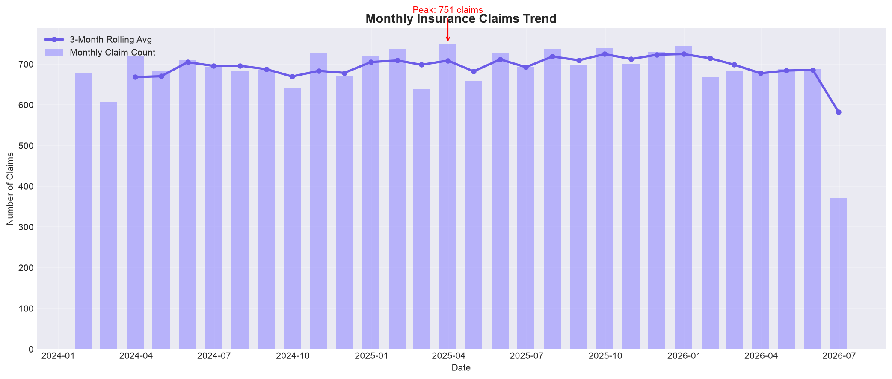
4.2 Year-over-Year Comparison
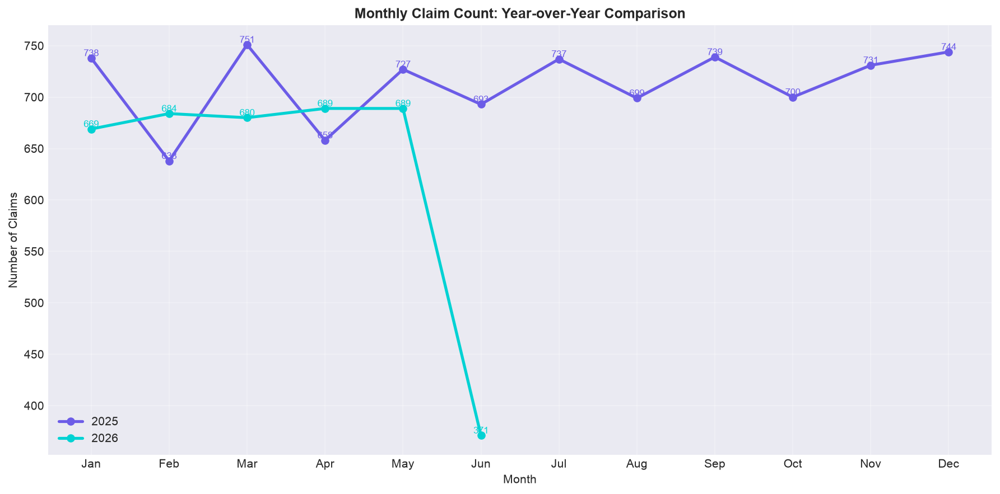
The Manager's Read of a Trend Chart
Business Question: Is claims volume growing faster or slower than the business? Is the trend a blip or a structural shift?
How to Read (30 seconds): Look at the slope of the trend line (not the month-to-month noise). Ask: is it rising steadily (structural), spiking (event-driven), or flat (stable)? Check the gap between the actual line and the rolling average — a widening gap means acceleration.
Action it triggers: Rising trend vs. stable premium → pricing is deteriorating → raise rates or tighten underwriting. A spike → investigate the cause (new product, monsoon, fraud ring). A falling trend → check if the business is shrinking or just claims are improving.
5. Portfolio Composition & Comparison
Understanding the composition of an insurance portfolio — how premium, policies, and claims distribute across products, channels, regions, and customer segments — is essential for strategic decision-making. The right charts make these distributions immediately visible.
5.1 Premium by Product Type
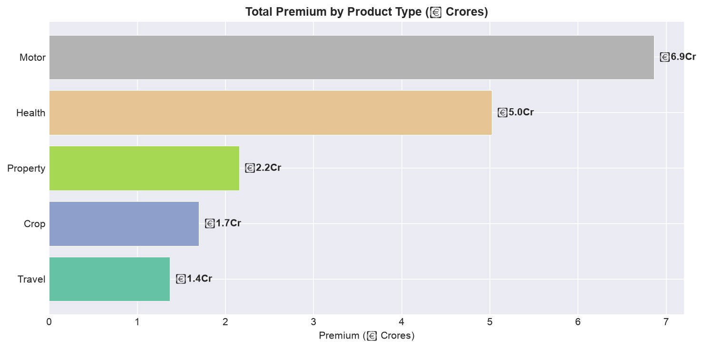
5.2 Loss Ratio Comparison — Grouped Bar Chart
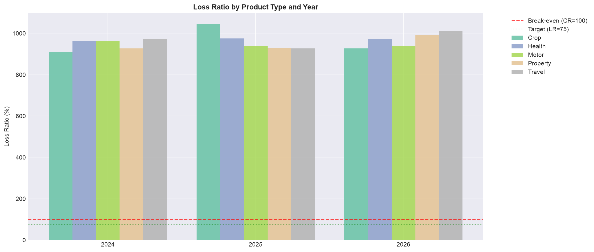
5.3 Channel Performance — Treemap Alternative
A treemap is ideal for showing hierarchical composition (channel → product), but requires an additional library (`squarify`). As a pure Matplotlib alternative, a stacked bar chart serves a similar purpose:
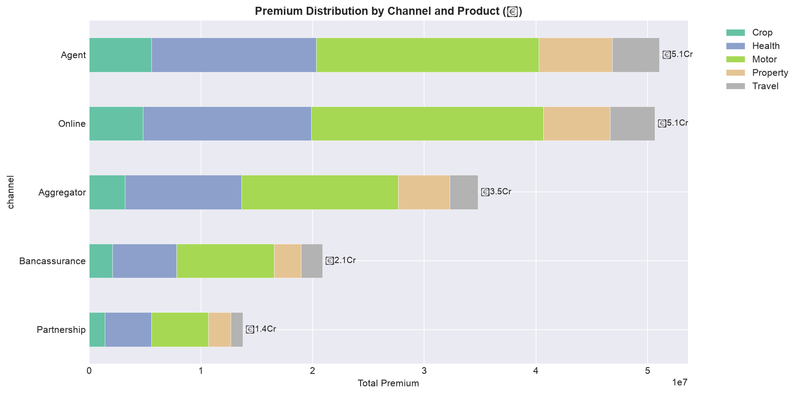
The "BCG Lens" on the Portfolio
A loss-ratio-by-product chart is the insurance equivalent of the BCG Growth-Share Matrix. Read it in two dimensions at once:
- Volume (premium share): which products bring in the money?
- Profitability (loss ratio): which products keep the money?
The four quadrants: High volume + low loss ratio = star (protect it). High volume + high loss ratio = bleeder (fix pricing or exit). Low volume + low loss ratio = opportunity (grow it). Low volume + high loss ratio = candidate for exit. A chart that shows only one dimension tells you half the story.
🎤 Exercise 5.1 — Portfolio Review Role-Play
You are the Head of Analytics presenting to the CEO. Here is your portfolio's loss-ratio-by-product chart:
| Product | Premium Share | Loss Ratio |
|---|---|---|
| Motor | 40% | 72% |
| Health | 30% | 78% |
| Property | 15% | 105% |
| Travel | 10% | 55% |
| Crop | 5% | 112% |
In one or two sentences each, complete the What / So What / Now What for the CEO:
- What does this chart show?
- So What — which line is the biggest problem, and why is it worse than the others?
- Now What — give ONE action the CEO should approve.
Check a Model Answer
What: Our portfolio is healthy overall (weighted loss ratio ~74%) — Motor and Health, our two big lines, are within the normal band. But two small lines are bleeding: Property at 105% and Crop at 112% are paying out more than they earn in premium.
So What: Crop is the worst — a 112% loss ratio means we lose ₹12 for every ₹100 of premium. Because Crop is only 5% of the book, it is easy to ignore — but it is destroying value on every policy and would be far more damaging if it scaled. Property at 105% is also loss-making.
Now What: Approve a 90-day review of Crop and Property pricing and underwriting — either re-price to a sustainable level or stop writing these two lines. Protect Motor and Health, which are our stars, and consider growing Travel, our most profitable line.
The skill being tested is not the code — it is the discipline of stating the problem in one line and committing to one decision. That is what a board wants from an analytics head.
6. Distribution & Outlier Analysis
Understanding the distribution of claim amounts, claim durations, and premium values is essential for pricing, reserving, and fraud detection. Insurance distributions are almost always right-skewed — a small number of large claims dominate total claims spend.
6.1 Claim Amount Distribution
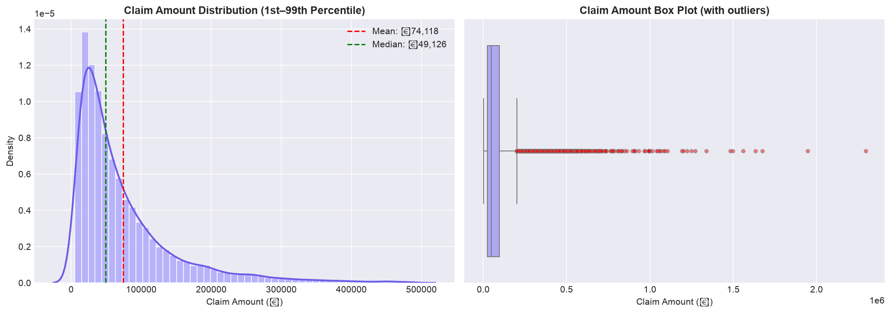
6.2 Days-to-Settle Analysis
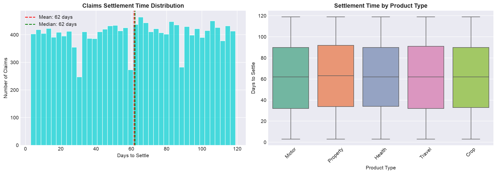
Why the Skew Is the Most Important Thing on the Chart
When the mean is well above the median (right-skewed), it means a few big claims drive most of the loss. This single fact changes three management decisions:
- Reserving: Reserving on the average will understate what you owe — you must reserve for the tail.
- Reinsurance: The tail is exactly what reinsurance exists for — the skew tells you how much tail protection you need.
- Pricing: Premiums based on the mean under-price the risk of a big loss. A portfolio that "averages out" is only safe if the tail is covered.
💼 Exercise 6.1 — The 30-Second Board Read
Your claims distribution shows: mean = ₹85,000, median = ₹42,000, and the top 1% of claims account for 28% of total claim spend. The board is about to approve next year's reinsurance budget. Write what you tell them — in three sentences: What, So What, Now What.
Check a Model Answer
What: Our claims are heavily right-skewed — the typical claim is ₹42K, but the average is dragged up to ₹85K by a small number of very large claims. The top 1% of claims produce 28% of everything we pay out.
So What: Reserving on the average would systematically understate our liability, and any single year with two or three of these large claims would blow through our loss budget.
Now What: Approve the increased reinsurance layer — we are not buying protection for the average claim, we are buying protection for the top 1%, and that is where the risk actually lives.
Note the discipline: no jargon, no code, no statistics lecture — just a clear read and a clear ask. That is the manager's job.
7. Correlation & Relationship Analysis
Understanding how insurance variables relate to each other — and which relationships are strong enough to be useful for underwriting or pricing — is the foundation of predictive modeling in insurance.
7.1 Correlation Heatmap
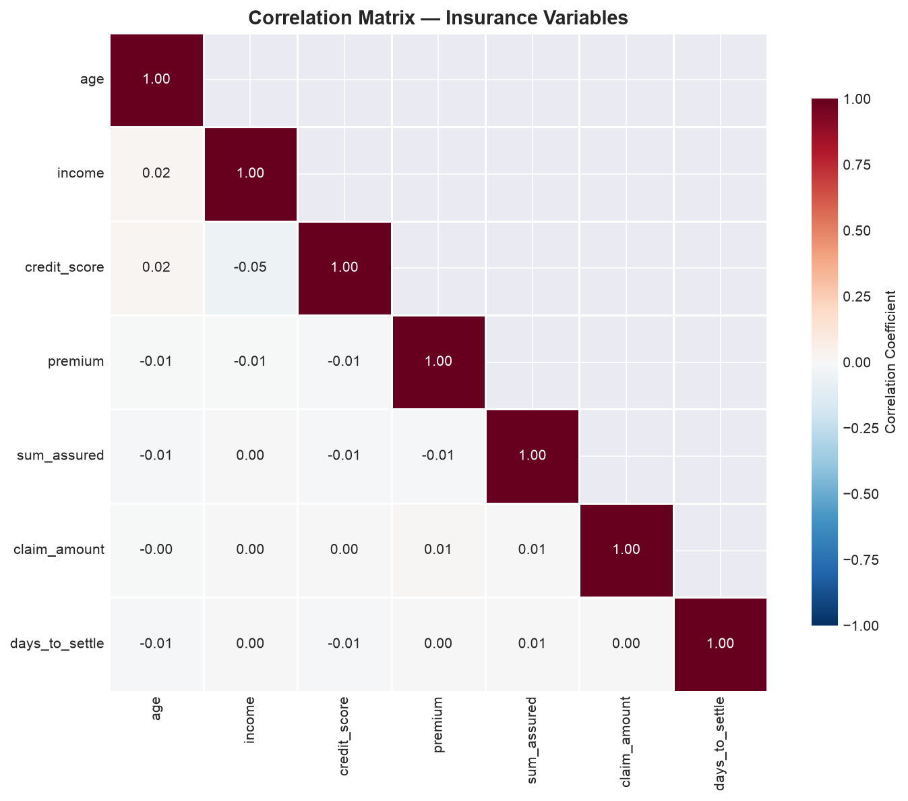
7.2 Scatter Plot: Premium vs. Claim Amount
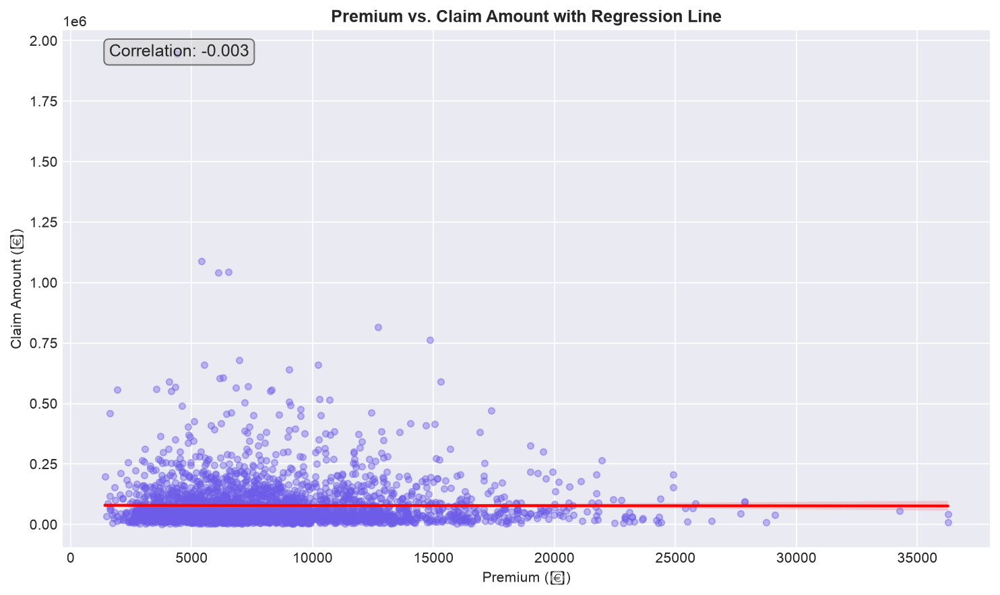
7.3 Multi-Dimensional Facet Scatter
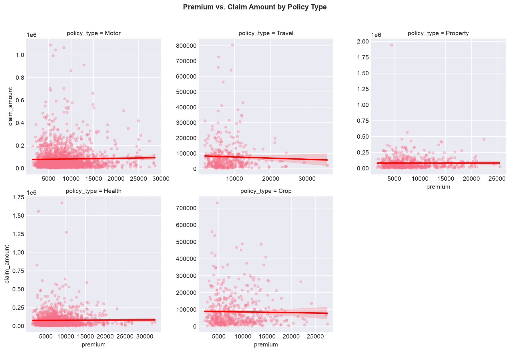
🧠 Exercise 7.1 — Which Factors Would You Use to Price Risk?
Your correlation heatmap shows these relationships with claim_amount: credit_score (−0.41), age (+0.28), premium (+0.22), income (−0.15), sum_assured (+0.18). The underwriter asks which factors you would build into a pricing model. Choose your top 3 and justify each.
- Top 3 factors to price on:
- Which factor would you be cautious about using, and why?
Check a Model Answer
- Top 3: credit_score (−0.41), age (+0.28), premium (+0.22). These have the strongest relationships with claim amount — and they are all available at application time, so they are usable for pricing.
- Be cautious with credit_score. It has the strongest correlation, but: (a) correlation ≠ causation — it may be a proxy for income or socioeconomic status; (b) it is ethically and legally sensitive as a pricing factor; (c) the EU AI Act and evolving Indian regulation scrutinise automated decisions that use such proxies. You would use it, but with a fairness/impact test and full documentation — not blindly.
The point of this exercise is the trade-off a manager makes every day: predictive power vs. fairness and regulation. The strongest number is not always the right one to use.
8. Publication-Ready Charts
A chart that is not publication-ready is a chart that will not be used. Creating charts that communicate clearly in a boardroom, management report, or client presentation requires attention to detail that goes beyond the default Matplotlib output.
8.1 The Publication Checklist
Before exporting any chart, verify each item on this checklist:
- Title: Does it tell the viewer what to look for? "Monthly Claims Trend" is a label, not a title. "Claims Volume Rose 15% YoY — Driven by Motor Portfolio Growth" is a title.
- Axis labels: Are units clear? Not "Claims" but "Number of Claims (Thousands)" or "Claim Amount (₹ Crores)."
- Data labels: Where the viewer needs to know exact values (KPIs, key data points), add labels directly on the chart rather than forcing the viewer to estimate from axis scales.
- Annotations: Have you explained unusual spikes, dips, or trend changes? The annotation is worth as much as the data.
- Legend: Is it placed where it does not obscure data? In the upper-left or below the chart are usually safest.
- Color: Are colors accessible (colorblind-safe)? Are they consistent with your brand or report theme? No more than 6 distinct categories per chart.
- Resolution: Is the export at least 300 DPI for print or 150 DPI for digital?
8.2 Creating a Consistent Dashboard Style
Define a custom style once and reuse it across all charts to create a consistent visual identity:
8.3 Exporting Charts
8.4 Dual-Axis Chart: Combining KPIs
A dual-axis chart is the most effective way to show the relationship between two KPIs with different units — such as premium growth (₹) and loss ratio (%):
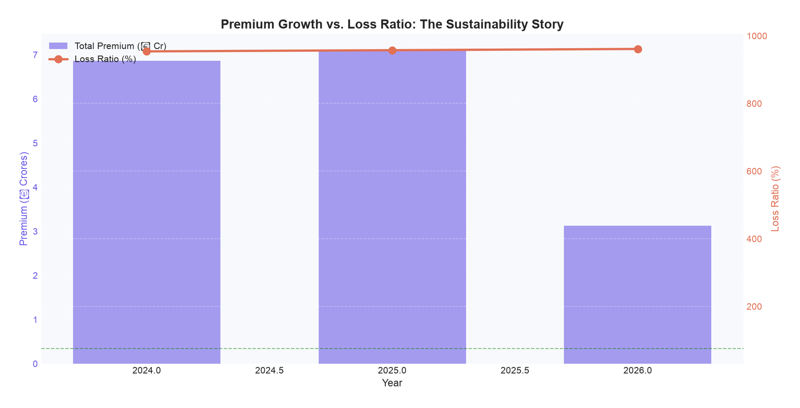
The 30-Second Presentation Rule
When you present a chart to a board, tell them the conclusion before you show the chart. "Motor loss ratio deteriorated 6 points this year, driven by rising third-party claims — here is the chart." The chart then confirms the message; it does not have to deliver it.
Practice prompt: Take the dual-axis chart (premium vs. loss ratio). Write the one sentence you would say to the CEO before showing it, and the one action you recommend. This is the difference between an analyst who shows data and one who drives decisions.
Hands-On Project: A 1-Page Board Brief from 6 Charts
Using the cleaned merged dataset from Session 05, build 6 publication-quality charts — then turn them into a one-page board brief. The charts are the evidence; the brief is the decision. Every chart you make must answer the manager's three questions: What / So What / Now What.
Steps
- Chart 1 — Monthly Claims Trend: Bar chart of monthly claim counts with a 3-month rolling average. Annotate any significant spike or dip.
- Chart 2 — Loss Ratio by Product Type: Horizontal bar chart of loss ratio by product. Add reference lines at 75 and 100. This is your "which line is bleeding?" chart.
- Chart 3 — Claim Amount Distribution: Histogram with KDE overlay. Add mean and median lines. Print skewness and interpret — this is your "why reserving/reinsurance matter" chart.
- Chart 4 — Correlation Heatmap: Heatmap of at least 5 numeric variables. Identify the strongest correlation and comment on whether it is fair to use, not just strong.
- Chart 5 — Dual-Axis Chart: Premium growth (bar) vs. loss ratio trend (line). This answers: "is our growth profitable?"
- Chart 6 — Settlement Time by Product: Box plot of days-to-settle by product. Add the overall average line — this is your customer-experience chart.
- Export all charts at 300 DPI with consistent styling.
- Write the 1-page board brief — for EACH chart, two lines only:
- So What: the single business insight (not the technical detail)
- Now What: the one decision or action it supports
View Solution / Walkthrough
Master Solution: 6-Chart Insurance Dashboard
The complete code for all 6 charts is in visualization_analysis.py on GitHub (the HANDS-ON section at the end of the script shows which blocks to reuse). Here is the structure and expected interpretation for each chart:
| Chart | Expected Pattern | Business Interpretation |
|---|---|---|
| 1. Monthly Claims Trend | Cyclical pattern with claim counts peaking in July–August (monsoon) and December–January (travel/holiday). Long-term gradual upward trend as portfolio grows. | "Claims follow a predictable seasonal pattern. The monsoon peak suggests weather-related motor claims — validate by cross-referencing with weather data from Session 18." |
| 2. Loss Ratio by Product | Motor likely has highest loss ratio (70–85%), Health moderate (60–75%), Property most variable (40–80% depending on cat events). | "Motor insurance is the most capital-intensive line with the highest loss ratio — it drives overall portfolio profitability. Any improvement in motor loss ratio directly improves the combined ratio." |
| 3. Claim Amount Distribution | Strong right skew (skewness > 2). Mean > Median. Top 1% of claims may account for 15–30% of total claims cost. | "The distribution confirms the classic insurance pattern — a small number of large claims drive the majority of losses. Pricing and reserving must be based on the full distribution, not just the average." |
| 4. Correlation Heatmap | Premium shows moderate positive correlation with sum_assured. Credit_score shows weak negative correlation with claim_amount. Age-claim_amount relationship varies by product type. | "Credit score has the expected negative relationship with claims — higher credit score, lower claims. The magnitude is modest, suggesting it is one factor among many in risk assessment." |
| 5. Dual-Axis: Premium vs. Loss Ratio | Premium growing year-over-year (10–15%). Loss ratio should ideally be stable or declining. If loss ratio is rising as premium grows, the growth is under-priced. | "Premium is growing at approximately X% annually. The loss ratio is trending at Y%, which is [within acceptable range / a concern]. This portfolio is [profitable / marginal / at risk]." |
| 6. Settlement Time by Product | Motor claims settle fastest (10–20 days median). Property takes longer (20–40 days due to surveyor involvement). Health varies widely depending on cashless vs. reimbursement. | "Motor claims settle fastest, reflecting standardized repair processes and aggregated garages. Property claims take longest, driven by surveyor scheduling and complex loss assessment." |
Key Considerations for Your Solution
- Apply the INSURANCE_STYLE consistently so all 6 charts share the same visual identity — this is what makes them a "dashboard" rather than 6 separate charts
- Use the INSURANCE_PALETTE for all color choices
- Every chart must have a business title (not just "Claims Trend" but "Motor Claims Growing 12% YoY — Monsoon Spike Amplifying")
- At least 3 of the 6 charts should have an annotation explaining a specific data point
- Export all charts at 300 DPI with consistent dimensions
- The business interpretation paragraph for each chart is as important as the chart itself — without interpretation, it is just a picture
3-2-1 Reflection — Before You Move On
A manager reads charts — practise translating them into decisions. Write from memory, don't scroll back.
3 Things I Learned Today
2 Charts I Can Now Explain to a Manager
1 Question I Still Have About Data Visualisation
Key Takeaways
In insurance, the best visualizations pair KPIs together: premium growth with loss ratio, claims frequency with average severity. A single KPI in isolation is almost always misleading.
Every chart should make a business insight immediately visible. If the audience cannot see the story in 5 seconds, the chart needs better formatting, annotations, or a different chart type.
Insurance claim distributions are heavily right-skewed — mean exceeds median, and the top 1% of claims may account for 20%+ of total cost. Visualizations must not obscure this tail risk.
The dual-axis chart (premium growth + loss ratio) is the single most informative chart in insurance analytics — it tells the complete story of whether growth is profitable or destructive.
Publication-ready charts require attention to 7 details: business-focused titles, clear axis labels, strategic data labels, contextual annotations, colorblind-safe colors, consistent styling, and high resolution exports.
Test Your Understanding
1. When creating a dual-axis chart showing premium growth (bar) alongside loss ratio (line), the primary business insight you are looking for is:
2. A histogram of claim amounts shows a strong right skew with mean = ₹85,000 and median = ₹42,000. This implies:
3. When using Seaborn's FacetGrid to compare premium vs. claim amount by policy type, the col_wrap parameter controls:
4. In the context of insurance data visualization, what distinguishes a "data quality outlier" from a "business outlier"?
5. The correct Matplotlib command to rotate x-axis tick labels by 45 degrees is: